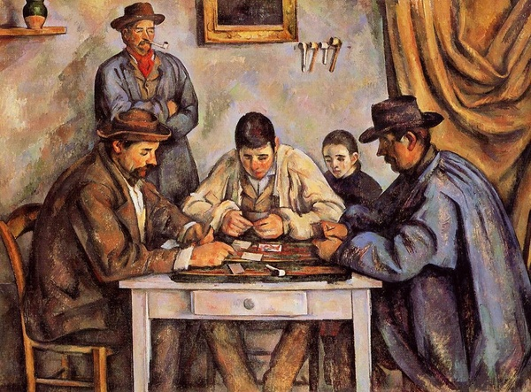

The Card Players is a series of oil paintings by french artist Paul Cézanne. This series has 5 different paintings which all depict men playing a game of cards. One of the paintings in the series was made in 1890-1892, and this painting was the most complex out of the five. It depicts three men playing cards seated at a table with two men spectating the game behind them. This painting can be found in Pennsylvania, at the Barnes Foundation. Another painting holds the title for the third most expensive painting in the world.
Cézanne tweaked the paintings and slowly got rid of “unnecessary” details like the spectators. All of these paintings varied in size greatly, some are 4½ by 6 feet, and others are 1½ by 2 feet. They were all completed around the early 1890s.
One of the paintings in the series was actually stolen when it was in an exhibit in Paris, and it was in the hands of burglars in August 1961. It was snatched when Cézanne was in his hometown, but it was eventually returned, although it is unknown how it happened.
In 2011, George Embiricos sold one of the paintings to the State of Qatar for over $250 million in a private sale. At the time, it was the most expensive painting in the world. Currently, it’s the third most expensive painting in the world, and its value has risen to about $288 million.